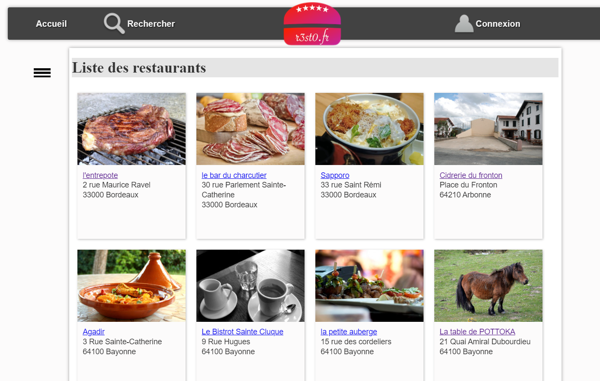
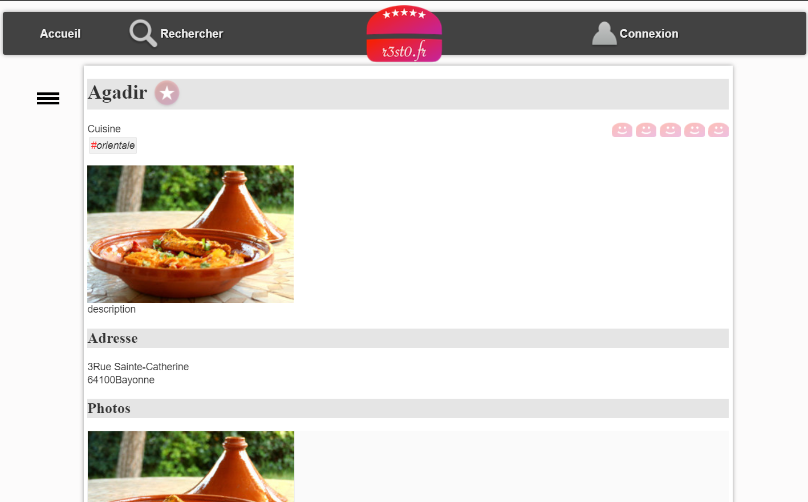
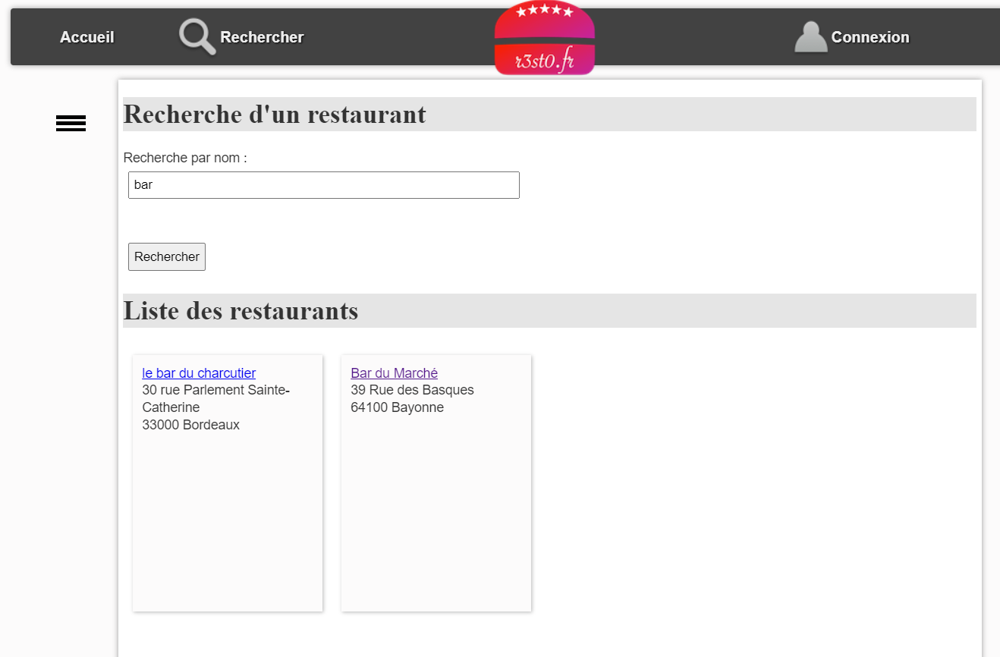
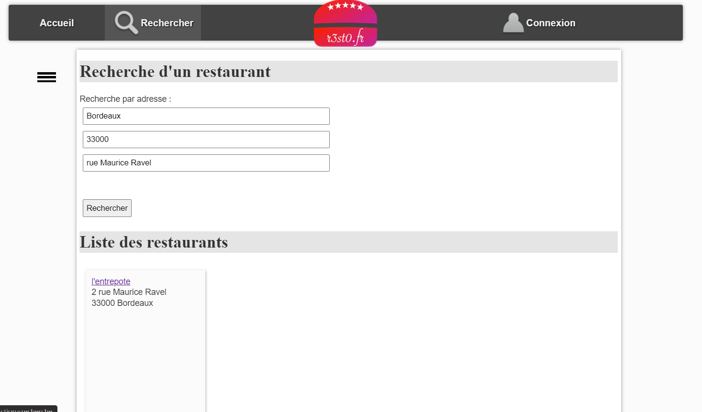

Projet Gestion Restaurants
Fonctions de Récupération de Données (bd.inc.php)
getUtilisateurs(): Récupère tous les utilisateurs de la base de données.getUtilisateurByMailU($mailU): Récupère un utilisateur par son adresse e-mail.getTypesCuisine(): Récupère tous les types de cuisine.getTypesCuisinePreferesByMailU($mailU): Récupère les types de cuisine préférés d'un utilisateur.getRestoByIdR($idR): Récupère un restaurant par son identifiant.
Fonctions de Gestion des Restaurants (bd.pdo.php)
getLesRestos(): Récupère tous les restaurants.getUnRestoByIdR($idR): Récupère un restaurant par son identifiant.getLesRestosByTypeCuisine($idTC): Récupère les restaurants par type de cuisine.getLesRestosByVille($villeR): Récupère les restaurants par ville.getLesRestosByNom($nomR): Récupère les restaurants par nom.
Fonctions de Gestion des Photos (photos.php)
getLesPhotosByIdR($idR): Récupère les photos d'un restaurant par son identifiant.
Fonctions de Gestion des Critiques (critiquer.php)
getCritiquerByIdR($idR): Récupère les critiques d'un restaurant par son identifiant.getNoteMoyenneByIdR($idR): Calcule la note moyenne d'un restaurant.
Fonctions de Gestion des Utilisateurs (bd.utilisateur.inc.php)
login($mailU, $mdpU): Gère la connexion utilisateur.logout(): Gère la déconnexion utilisateur.getMailULoggedOn(): Récupère l'e-mail de l'utilisateur connecté.isLoggedOn(): Vérifie si un utilisateur est connecté.
Base de Données (bd.pdo.php)
getLesRestosByTypeCuisine($idTC): Récupère les restaurants par type de cuisine.
cette photo est l'affichage des restos

les details d'un resto

recherche par nom

recherche par ville et adresse et code podtale
